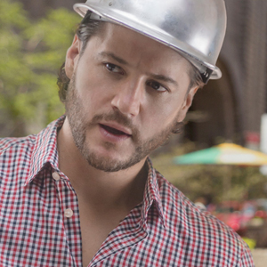

<link rel="import" href="../polymer/polymer.html">
<link rel="import" href="../paper-icon-button/paper-icon-button.html" />
<link rel="import" href="../iron-icons/image-icons.html" />
<link rel="import" href="../iron-icons/av-icons.html" />
<link rel="import" href="../iron-icons/iron-icons.html" />

<link rel="import" href="./dialog-no-style.html" />
<!--
`guuey-photo-editor`
element that returns edited images as base64 for use in applications.
optional cropHeight and cropWidth properties to set the crop dimensions
@demo demo/index.html
-->

<dom-module id="guuey-photo-editor">
  <template>
    <style>

      .edit-button {
        color: #7E57C2;
      }
      .toolbar {
        margin:0;
        padding:0;
      }

      #editDialog {
        z-index:998;
        position:fixed;
        padding:var(--edit-dialog-padding, 100px);
        background:
        linear-gradient(-90deg, rgba(0,0,0,.05) 1px, transparent 1px),
        linear-gradient(rgba(0,0,0,.05) 1px, transparent 1px),
        linear-gradient(-90deg, rgba(0, 0, 0, .04) 1px, transparent 1px),
        linear-gradient(rgba(0,0,0,.04) 1px, transparent 1px),
        linear-gradient(transparent 3px, #f2f2f2 3px, #f2f2f2 78px, transparent 78px),
        linear-gradient(-90deg, #aaa 1px, transparent 1px),
        linear-gradient(-90deg, transparent 3px, #f2f2f2 3px, #f2f2f2 78px, transparent 78px),
        linear-gradient(#aaa 1px, transparent 1px),
        #f2f2f2;
        background-size:
        4px 4px,
        4px 4px,
        80px 80px,
        80px 80px,
        80px 80px,
        80px 80px,
        80px 80px,
        80px 80px;
      }
      #imageContainer {
        margin:0;
        padding:0;
        position:relative;
        display:inline-block;
        cursor: move;
        border:1px solid black;
      }

      #imageContainer:hover img,
      #imageContainer:hover img {
        outline: 2px dashed #7E57C2;
      }
      .resize-handle {
          position: absolute;
          display: block;
          width: 40px;
          height: 40px;
          background: #7E57C2;
          z-index: 998;
      }

      .resize-handle-nw {
          top: -20px;
          left: -20px;
          cursor: nw-resize;
      }

      .resize-handle-sw {
          bottom: -20px;
          left: -20px;
          cursor: sw-resize;
      }

      .resize-handle-ne {
          top: -20px;
          right: -20px;
          cursor: ne-resize;
      }

      .resize-handle-se {
          bottom: -20px;
          right: -20px;
          cursor: se-resize;
      }

      #image {
        background-color:grey;
        display:block;
        min-width:var(--image-min-width, 50px);
        min-height:var(--image-min-height, 50px);
        max-width:var(--image-max-width, 600px);
        max-height:var(--image-max-height, 600px);
      }

      .overlay {
          position: absolute;
          left: 50%;
          top: 50%;
          margin-top: calc(var(--editor-overlay-height, 200px) * -0.5);
          margin-left: calc(var(--editor-overlay-width, 200px) * -0.5);
          z-index: 999;
          height:var(--editor-overlay-height, 200px);
          width:var(--editor-overlay-width, 200px);
          border: solid 2px #7E57C2;
          box-sizing: content-box;
          pointer-events: none;

          /*overwrites for paper-dialog styles*/
          padding:0;
          margin-bottom:0;
      }

      .overlay:after,
      .overlay:before {
          content: '';
          position: absolute;
          display: block;
          width:var(--editor-overlay-width, 200px);
          height: 40px;
          border-left: dashed 2px #7E57C2;
          border-right: dashed 2px #7E57C2;
      }

      .overlay:before {
          top: 0;
          margin-left: -2px;
          margin-top: -40px;
      }

      .overlay:after {
          bottom: 0;
          margin-left: -2px;
          margin-bottom: -40px;
      }

      .overlay-inner:after,
      .overlay-inner:before {
          content: '';
          position: absolute;
          display: block;
          width: 40px;
          height:var(--editor-overlay-height, 200px);
          border-top: dashed 2px #7E57C2;
          border-bottom: dashed 2px #7E57C2;
      }

      .overlay-inner:before {
          left: 0;
          margin-left: -40px;
          margin-top: -2px;
      }

      .overlay-inner:after {
          right: 0;
          margin-right: -40px;
          margin-top: -2px;
      }

      .toolbar {
        position:absolute;
        left:10%;
        bottom:20px;
        margin-top:20px;
        vertical-align:bottom;
        z-index:999;
        display:flex;
        flex-direction:row;
        width:80%;
        margin:auto;
        background-color:#F0F0F0;
        opacity:.8;
        border: 1px solid black;
      }

      .edit-button {
          color: #7E57C2;
          flex-grow:1;
          background-color:rgba(240, 240, 240, 0.8);
      }
    </style>
    <paper-icon-button id="startEditButton" icon="image:add-a-photo" on-tap="_startEdit"></paper-icon-button>

    <input
      id="imageInput"
      type="file"
      on-change="_inputChanged"
      hidden>
    </input>

    <dialog-no-style id="editDialog">
      <div id="imageContainer">
        <span id="nw" class="resize-handle resize-handle-nw"></span>
        <span id="ne" class="resize-handle resize-handle-ne"></span>
        
        <span id="se" class="resize-handle resize-handle-se"></span>
        <span id="sw" class="resize-handle resize-handle-sw"></span>
      </div>

      <div class="toolbar">
        <paper-icon-button class="edit-button" icon="image:add-a-photo" on-tap="change"></paper-icon-button>
        <paper-icon-button class="edit-button" icon="image:rotate-left" on-tap="rotateLeft"></paper-icon-button>
        <paper-icon-button class="edit-button" icon="image:rotate-right" on-tap="rotateRight"></paper-icon-button>
        <paper-icon-button class="edit-button" icon="image:crop" on-tap="crop"></paper-icon-button>
        <paper-icon-button class="edit-button" icon="icons:save" on-tap="save"></paper-icon-button>
        <paper-icon-button class="edit-button" icon="av:fast-rewind" on-tap="reset"></paper-icon-button>
        <paper-icon-button class="edit-button" icon="icons:cancel" on-tap="cancel"></paper-icon-button>
      </div>

      <div id="overlay" class="overlay">
        <div class="overlay-inner">
          <!--overlay used for cropping positioned in css -->
        </div>
      </div>

    </dialog-no-style>

  </template>
  <script>
    Polymer({

      is: 'guuey-photo-editor',

      properties: {
        //the returned result of the element after saving. can be accessed from parent elements.
        value: {
          type:String,
          notify:true,
          observer: "_valueChanged"
        },
        //the height of the crop rectangle
        cropHeight: {
          type:Number,
          value:200
        },
        //the width of the crop rectangle
        cropWidth: {
          type:Number,
          value:200
        },
        //keeps track of whether or not the image has been rotated. used in order to decide which source to use.
        rotated: {
          type: Boolean,
          value: false,
        },
        //keeps track of whether or not the image has been cropped. used in order to decide which source to use.
        cropped: {
          type: Boolean,
          value: false,
        },
        //kept in order to preserve the image quality when resizing an image.
        orig: {
          type: Object
        },
        //used to track rotate and crop changes.
        alt: {
          type: Object
        },
        //canvas which image operations are run on
        canvas: {
          type: Object
        },
        //canvas.getContext("2d")
        ctx: {
          type: Object
        },
        //keeps track of events when moving the image around for cropping. Things such as mouseY and mouseX etc.
        eventState: {
          type: Object,
          value: {}
        },
        //keeps track of events when moving the image resize container around for cropping. Things such as mouseY and mouseX etc.
        dialogEventState: {
          type: Object,
          value: {}
        },
        //min width the canvas will go to when resizing an image.
        minWidth: {
          type:Number,
          value:10
        },
        //min height the canvas will go to when resizing an image.
        minHeight: {
          type:Number,
          value:10
        },
        //used to decide whether or not to constrain proportions
        constrain: {
          type: Boolean,
          value: true
        }
      },

      ready:function() {
        //update display for images with min/max values
        this.setMinMax();

        //initialize the needed elements for photo edits
        this.orig = new Image();
        this.orig.src = this.$.image.src;
        this.alt = new Image();
        this.canvas = document.createElement("canvas");
        this.ctx = this.canvas.getContext("2d");

        //listener to move the dialog around
        this.listen(this.$.editDialog, "mousedown", "_startDialogMoving");
        this.listen(this.$.editDialog, "touchstart", "_startDialogMoving");

        //set listener on resize pointers for when mouse held down
        this.listen(this.$.se, "mousedown", "_startResize");
        this.listen(this.$.se, "touchstart", "_startResize");
        this.listen(this.$.sw, "mousedown", "_startResize");
        this.listen(this.$.sw, "touchstart", "_startResize");
        this.listen(this.$.nw, "mousedown", "_startResize");
        this.listen(this.$.nw, "touchstart", "_startResize");
        this.listen(this.$.ne, "mousedown", "_startResize");
        this.listen(this.$.ne, "touchstart", "_startResize");

        //set listener on image to start moving
        this.listen(this.$.image, "mousedown", "_startImageMoving");
        this.listen(this.$.image, "touchstart", "_startImageMoving");
      },

      //set min/max width/height for images based on properties set
      setMinMax:function() {
        var cropWidth = this.cropWidth;
        var cropHeight = this.cropHeight;
        var minDimension = Math.min(window.innerWidth, window.innerHeight);
        var desiredCropScale = .7;
        this.dialogPadding = minDimension * .10;
        if(this.cropWidth > minDimension * desiredCropScale || this.cropHeight > minDimension * desiredCropScale){
          var scale = Math.min((minDimension * desiredCropScale - (this.dialogPadding * 2) - 40) / this.cropWidth, (minDimension * desiredCropScale - (this.dialogPadding * 2) - 40) / this.cropHeight);
          cropWidth = (this.cropWidth * scale);
          cropHeight = (this.cropHeight * scale);
        };
        this.maxWidth = window.innerWidth - minDimension * .10 * 2;
        this.maxHeight = window.innerHeight - minDimension * .10 * 2;
        this.customStyle["--edit-dialog-padding"] = minDimension * .10 + "px";
        this.customStyle["--image-min-width"] = this.minWidth + "px";
        this.customStyle["--image-min-height"] = this.minHeight + "px";
        this.customStyle["--image-max-width"] = this.maxWidth + "px";
        this.customStyle["--image-max-height"] = this.maxHeight + "px";
        this.customStyle["--editor-overlay-width"] = cropWidth + "px";
        this.customStyle["--editor-overlay-height"] = cropHeight + "px";
        this.updateStyles();
      },

      _startEdit:function(e) {
        this.$.editDialog.open();
      },

      _valueChanged:function(value) {
        if((value !== null || "" || undefined || "undefined") && typeof value !== "undefined" || undefined){
          this.$.image.src = value;
          this.orig.src = value;
          this.alt.src = value;
        };
      },

      _inputChanged:function(e) {
        var reader = new FileReader();
        var file = e.target.files[0];
        reader.readAsDataURL(file);
        reader.addEventListener("load", function () {
          this.$.image.src = reader.result;
          var width = this.$.image.naturalWidth;
          var height = this.$.image.naturalHeight;
          //check dimensions of image. if too large then scale down to max dimension settings
          if(width > this.maxWidth || height > this.maxHeight){
            var scaleTarget = width > height ? width : height;
            var scaleDimension = width > height ? "maxWidth" : "maxHeight";
            var scaleAmount = this[scaleDimension] / scaleTarget;
            this.canvas.width = width * scaleAmount;
            this.canvas.height = height * scaleAmount;
            this.ctx.clearRect(0, 0, this.canvas.width, this.canvas.height);
            this.ctx.drawImage(this.$.image, 0, 0, width, height, 0, 0, width * scaleAmount, height * scaleAmount);
            this.$.image.src = this.canvas.toDataURL("image/png");
          };
          this.orig.src = this.$.image.src;
          this.alt.src = "";
          this.rotated = false;
          this.cropped = false;
        }.bind(this), false);
      },
      //create rotate configs based on this.$.imageContainer x:translateX y:translateY r: rotate 90 degrees right
      rotateRight:function() {
        var config = {
          x: this.$.imageContainer.offsetHeight - 2,
          y: 0,
          r: 90 * (Math.PI/180)
        };
        this.incrementClockPos(true);
        this._rotate(config);
      },
      //create rotate configs based on this.$.imageContainer x:translateX y:translateY r: rotate 90 degrees left then _rotate.
      rotateLeft:function() {
        var config = {
          x: 0,
          y: this.$.imageContainer.offsetWidth - 2,
          r: -90 * (Math.PI/180)
        };
        this.incrementClockPos(false);
        this._rotate(config);
      },

      _rotate:function(config) {
        var width = this.$.imageContainer.offsetWidth - 2;
        var height = this.$.imageContainer.offsetHeight - 2;
        this.canvas.width = height;
        this.canvas.height = width;
        this.ctx.translate(config.x, config.y);
        this.ctx.rotate(config.r);
        this.ctx.drawImage(this.$.image, 0, 0);
        this.$.image.src = this.canvas.toDataURL("image/png");
        this.alt.src = this.$.image.src;
      },

      //handle start of resize
      _startResize:function(e) {
        e.preventDefault();
        e.stopPropagation();
        this._saveEventState(e);
        this.addEventListener("mousemove", this._resizing);
        this.addEventListener("touchmove", this._resizing);
        this.addEventListener("mouseup", this._endResize);
        this.addEventListener("touchend", this._endResize);
      },

      //save event state for use in other functions used to save vars for reference and comparison later
      _saveEventState:function(e) {
        this.eventState.containerWidth = this.$.imageContainer.offsetWidth;
        this.eventState.containerHeight = this.$.imageContainer.offsetHeight;
        this.eventState.containerLeft = this.$.imageContainer.offsetLeft;
        this.eventState.containerTop = this.$.imageContainer.offsetTop;
        this.eventState.mouseX = (e.clientX || e.pageX || e.touches[0].clientX) + window.scrollX;
        this.eventState.mouseY = (e.clientY || e.pageY || e.touches[0].clientY) + window.scrollY;
        this.eventState.currentTarget = e.currentTarget;
        this.eventState.evnt = e;
      },

      _endResize:function(e) {
        e.preventDefault();
        this.removeEventListener("mouseup", this._endResize);
        this.removeEventListener("touchend", this._endResize);
        this.removeEventListener("mousemove", this._resizing);
        this.removeEventListener("touchmove", this._resizing);
      },

      _resizing:function(e) {
        var target = (this.rotated || this.cropped) ? this.alt : this.orig;
        var check = (this.rotated || this.cropped)  ? "alt" : "orig";
        var isSE = this.checkElementClass(this.eventState.currentTarget,"resize-handle-se");
        var isSW = this.checkElementClass(this.eventState.currentTarget,"resize-handle-sw");
        var isNE = this.checkElementClass(this.eventState.currentTarget,"resize-handle-ne");
        var isNW = this.checkElementClass(this.eventState.currentTarget,"resize-handle-nw");
        var mouse = {};
        var offset = this.getElementOffset(this.$.imageContainer);
        mouse.x = (e.clientX || e.pageX || e.touches[0].clientX) - this.$.editDialog.offsetLeft;
        mouse.y = (e.clientY || e.pageY || e.touches[0].clientY) - this.$.editDialog.offsetTop;
        var width;
        var height;
        var left;
        var top;
        // Position image differently depending on the corner dragged and constraints
        if(isSE) {
          width = mouse.x - this.eventState.containerLeft;
          height = mouse.y - this.eventState.containerTop;
          left = this.eventState.containerLeft - this.$.editDialog.offsetWidth;
          top = this.eventState.containerTop - this.$.editDialog.offsetHeight;

        } else if(isSW) {
          width = this.eventState.containerWidth - (mouse.x - this.eventState.containerLeft);
          height = mouse.y - this.eventState.containerTop;
          left = mouse.x;
          top = this.eventState.containerTop;
        } else if(isNW) {
          width = this.eventState.containerWidth - (mouse.x - this.eventState.containerLeft);
          height = this.eventState.containerHeight - (mouse.y - this.eventState.containerTop);
          left = mouse.x;
          top = mouse.y;
          if(this.constrain || e.shiftKey) {
            top = mouse.y - ((width / target.width * target.height) - height);
          };
        } else if(isNE) {
          width = mouse.x - this.eventState.containerLeft;
          height = this.eventState.containerHeight - (mouse.y - this.eventState.containerTop);
          left = this.eventState.containerLeft;
          top = mouse.y;
          if(this.constrain || e.shiftKey) {
            top = mouse.y - ((width / target.width * target.height) - height);
          };
        };
        if(this.constrain || e.shiftKey) {
          height = width / target.width * target.height;
        };
        if(width > this.minWidth && height > this.minHeight && width < this.maxWidth && height < this.maxHeight) {
          this.resizeImage(width, height);
          //needed for firefox
          this.$.imageContainer.offsetLeft = left;
          this.$.imageContainer.offsetTop = top;
        } else {
          console.log("image too big or small");
          console.log(width, height);
        };
      },

      //takes in html element as an argument and returns an object {top: x, left: y}
      getElementOffset:function(element) {
        var de = document.documentElement;
        var box = element.getBoundingClientRect();
        var top = box.top + window.pageYOffset - de.clientTop;
        var left = box.left + window.pageXOffset - de.clientLeft;
        return { top: top, left: left };
      },

      //takes in an html element and className as arguments and returns whether or not the element has said class
      checkElementClass:function(element, className) {
        var classList=element.classList.value;
        if(classList.indexOf(className) != -1){
          return true;
        } else {
          return false;
        }
      },

      //resize image, takes in two arguments, width, and height
      resizeImage:function(width, height) {
        var src = (this.rotated || this.cropped) ? this.alt : this.orig;
        this.canvas.width = width;
        this.canvas.height = height;
        this.ctx.drawImage(src, 0, 0, width, height);
        this.$.image.src = this.canvas.toDataURL("image/png");
      },

      //set event listeners when image moving has started
      _startImageMoving:function(e) {
        e.preventDefault();
        e.stopPropagation();
        this._saveEventState(e);
        this.addEventListener("mousemove", this._imageMoving);
        this.addEventListener("touchmove", this._imageMoving);
        this.addEventListener("mouseup", this._endImageMoving);
        this.addEventListener("touchend", this._endImageMoving);
      },
      //process moving image
      _imageMoving:function(e) {
        var mouse = {};
        var touches;
        if(e.touches){
          touches = e.touches;
        };
        e.preventDefault();
        e.stopPropagation();
        mouse.x = (e.clientX || e.pageX || e.touches[0].clientX) + window.scrollX;
        mouse.y = (e.clientY || e.pageY || e.touches[0].clientY) + window.scrollY;
        var offsetLeft = mouse.x - (this.eventState.mouseX - this.eventState.containerLeft + this.dialogPadding);
        var offsetTop = mouse.y - (this.eventState.mouseY - this.eventState.containerTop + this.dialogPadding);
        Polymer.dom(this.$.imageContainer).setAttribute("style", "top: " + offsetTop + "px; left: " + offsetLeft + "px;");
        // Watch for pinch zoom gesture while moving
        if(this.eventState.evnt.touches && this.eventState.evnt.touches.length > 1){
          var width = this.eventState.containerWidth
          var height = this.eventState.containerHeight;
          var a = this.eventState.evnt.touches[0].clientX - this.eventState.evnt.touches[1].clientX;
          a = a * a;
          var b = this.eventState.evnt.touches[0].clientY - this.eventState.evnt.touches[1].clientY;
          b = b * b;
          var dist1 = Math.sqrt( a + b );

          a = e.touches[0].clientX - touches[1].clientX;
          a = a * a;
          b = e.touches[0].clientY - touches[1].clientY;
          b = b * b;

          var dist2 = Math.sqrt( a + b );
          var ratio = dist2 /dist1;

          width = width * ratio;
          height = height * ratio;
          // To improve performance you might limit how often resizeImage() is called
          this.resizeImage(width, height);
        };
      },

      //remove event listeners for image moving
      _endImageMoving:function(e) {
        e.preventDefault();
        this.removeEventListener("mouseup", this._endImageMoving);
        this.removeEventListener("touchend", this._endImageMoving);
        this.removeEventListener("mousemove", this._imageMoving);
        this.removeEventListener("touchmove", this._imageMoving);
      },

      //crop the image based on overlay positions relative to the image position
      crop:function() {
        var left = this.$.overlay.offsetLeft - this.$.imageContainer.offsetLeft;
        var top = this.$.overlay.offsetTop - this.$.imageContainer.offsetTop;
        var width = this.$.overlay.offsetWidth;
        var height = this.$.overlay.offsetHeight;

        this.canvas.width = width;
        this.canvas.height = height;
        this.ctx.drawImage(this.$.image, left, top, width, height, 0, 0, width, height);
        this.$.image.src = this.canvas.toDataURL("image/png");
        this.alt.src = this.$.image.src;
        var x = (this.$.editDialog.offsetWidth / 2 - this.$.imageContainer.offsetWidth / 2) - this.dialogPadding;
        var y = (this.$.editDialog.offsetHeight / 2 - this.$.imageContainer.offsetHeight /2 ) - this.dialogPadding;
        Polymer.dom(this.$.imageContainer).setAttribute("style", "left: " + x + "px; top: " + y + "px;");
        this.cropped=true;
      },

      //simulate click on input type="file"
      change:function() {
        this.$.imageInput.value = '';
        this.$.imageInput.click();
      },

      //cloes the modal without saving anything
      cancel:function() {
        this.$.editDialog.close();
      },
      //reset to original source... undoes all changes
      reset:function() {
        this.$.image.src = this.orig.src;
        this.alt.src = "";
        this.rotated=false;
        this.cropped=false;
      },

      //save changes from editor and return result as `value`
      save:function(){
        this.value = this.canvas.toDataURL("image/png");
        this.$.editDialog.close();
      },

      _startDialogMoving:function(e) {
        e.preventDefault();
        e.stopPropagation();
        this._saveDialogEventState(e);
        this.addEventListener("mousemove", this._dialogMoving);
        this.addEventListener("touchmove", this._dialogMoving);
        this.addEventListener("mouseup", this._endDialogMoving);
        this.addEventListener("touchend", this._endDialogMoving);
      },

      _saveDialogEventState:function(e) {
        this.dialogEventState.containerWidth = this.$.editDialog.offsetWidth;
        this.dialogEventState.containerHeight = this.$.editDialog.offsetHeight;
        this.dialogEventState.containerLeft = this.$.editDialog.offsetLeft;
        this.dialogEventState.containerTop = this.$.editDialog.offsetTop;
        this.dialogEventState.mouseX = (e.clientX || e.pageX || e.touches[0].clientX) + window.scrollX;
        this.dialogEventState.mouseY = (e.clientY || e.pageY || e.touches[0].clientY) + window.scrollY;
        this.dialogEventState.currentTarget = e.currentTarget;
        this.dialogEventState.evnt = e;
      },

      _dialogMoving:function(e) {
        var mouse={};
        var touches;
        if(e.touches){
          touches=e.touches;
        };
        e.preventDefault();
        e.stopPropagation();
        mouse.x = (e.clientX || e.pageX || e.touches[0].clientX) + window.scrollX;
        mouse.y = (e.clientY || e.pageY || e.touches[0].clientY) + window.scrollY;
        var offsetLeft = mouse.x - (this.dialogEventState.mouseX - this.dialogEventState.containerLeft);
        var offsetTop = mouse.y - (this.dialogEventState.mouseY - this.dialogEventState.containerTop);

        Polymer.dom(this.$.editDialog).setAttribute("style","top: " + offsetTop + "px; left: " + offsetLeft + "px;");
        Polymer.dom.flush();
      },

      _endDialogMoving:function(e) {
        e.preventDefault();
        this.removeEventListener("mouseup", this._endDialogMoving);
        this.removeEventListener("touchend", this._endDialogMoving);
        this.removeEventListener("mousemove", this._dialogMoving);
        this.removeEventListener("touchmove", this._dialogMoving);
      },

      //increments clock position left or right to one of four values 12, 3, 6, or 9
      //probably no longer needed... can keep just in case for future..
      incrementClockPos:function(clockwise) {
        var positions = [12, 3, 6, 9];
        var currentPosition = this.rotated ? this.rotated : 12;
        var arrayPosition = positions.indexOf(currentPosition);
        var newPosition = clockwise ? arrayPosition + 1 : arrayPosition - 1;

        if(newPosition > 3){
          newPosition = 0;
        };
        if(newPosition < 0){
          newPosition = 3;
        };
        this.rotated = positions[newPosition];
      },
      //checks rotated clock vars and returns true if inverted and false if not
      //probably no longer needed... can keep just in case for future..
      dimensionsInverted:function() {
        return this.rotated === (3 || 9) ? true : false;
      }
    });
  </script>
</dom-module>
